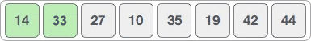
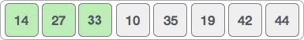
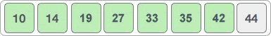
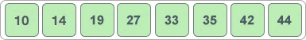

首页 > 编程笔记
插入排序算法
插入排序算法可以对指定序列完成升序（从小到大）或者降序（从大到小）排序，对应的时间复杂度为
插入排序算法的实现思路是：初始状态下，将待排序序列中的第一个元素看作是有序的子序列。从第二个元素开始，在不破坏子序列有序的前提下，将后续的每个元素插入到子序列中的适当位置。
举个简单的例子，用插入排序算法对 {14, 33, 27, 10, 35, 19, 42, 44} 实现升序排序的过程如下：
1) 将第一个元素 14 看作是一个有序的子序列 {14}，将剩余元素逐个插入到此序列的适当位置：

2) 将 33 插入到 {14} 中，由于 33 > 14，所以 33 应该插入到 14 的后面，新的有序序列变为 {14, 33}；
3) 将 27 插入到 {14, 33} 中，由于 27 < 33 同时 27 > 14，所以 27 应该插入到 14 和 33 的中间，新的有序序列变为 {14, 27, 33}；
4) 将 10 插入到 {14, 27, 33} 中，经过依次和 33、27、14 比较，最终断定 10 应该插入到 14 之前，新的有序序列变为 {10, 14, 27, 33}；

5) 将 35 插入到 {10, 14, 27, 33} 中，由于 35 > 33，所以 35 应该插入到 33 之后，新的有序序列变为 {10, 14, 27, 33, 35}；

6) 将 19 插入到 {10, 14, 27, 33, 35} 中，经过依次和 35、33、27、14 比较，最终断定 19 应该插入到 14 和 27 之间，新的有序序列变为 {10, 14, 19, 27, 33, 35}；

7) 将 42 插入到 {10, 14, 19, 27, 33, 35} 中，由于 42 > 35，所以 42 应插入到 35 之后，新的有序序列变为 {10, 14, 19, 27, 33, 35, 42}；
8) 将 44 插入到 {10, 14, 19, 27, 33, 35, 42} 中，由于 44 > 42，所以 44 应插入到 42 之后，新的有序序列变为 {10, 14, 19, 27, 33, 35, 42, 44}。
经过将各个待排序的元素插入到有序序列的适当位置，最终得到的就是一个包含所有元素的有序序列。
结合伪代码，如下是用插入排序算法对 {14, 33, 27, 10, 35, 19, 42, 44} 实现升序排序的 C 语言程序：
如下是用插入排序算法对 {14, 33, 27, 10, 35, 19, 42, 44} 实现升序排序的 Java 程序：
如下是用插入排序算法对 {14, 33, 27, 10, 35, 19, 42, 44} 实现升序排序的 Python 程序：
以上程序的输出结果均为：
O(n2)。插入排序算法的实现思路是：初始状态下，将待排序序列中的第一个元素看作是有序的子序列。从第二个元素开始，在不破坏子序列有序的前提下，将后续的每个元素插入到子序列中的适当位置。
举个简单的例子，用插入排序算法对 {14, 33, 27, 10, 35, 19, 42, 44} 实现升序排序的过程如下：
1) 将第一个元素 14 看作是一个有序的子序列 {14}，将剩余元素逐个插入到此序列的适当位置：
2) 将 33 插入到 {14} 中，由于 33 > 14，所以 33 应该插入到 14 的后面，新的有序序列变为 {14, 33}；

3) 将 27 插入到 {14, 33} 中，由于 27 < 33 同时 27 > 14，所以 27 应该插入到 14 和 33 的中间，新的有序序列变为 {14, 27, 33}；

4) 将 10 插入到 {14, 27, 33} 中，经过依次和 33、27、14 比较，最终断定 10 应该插入到 14 之前，新的有序序列变为 {10, 14, 27, 33}；
5) 将 35 插入到 {10, 14, 27, 33} 中，由于 35 > 33，所以 35 应该插入到 33 之后，新的有序序列变为 {10, 14, 27, 33, 35}；
6) 将 19 插入到 {10, 14, 27, 33, 35} 中，经过依次和 35、33、27、14 比较，最终断定 19 应该插入到 14 和 27 之间，新的有序序列变为 {10, 14, 19, 27, 33, 35}；
7) 将 42 插入到 {10, 14, 19, 27, 33, 35} 中，由于 42 > 35，所以 42 应插入到 35 之后，新的有序序列变为 {10, 14, 19, 27, 33, 35, 42}；

8) 将 44 插入到 {10, 14, 19, 27, 33, 35, 42} 中，由于 44 > 42，所以 44 应插入到 42 之后，新的有序序列变为 {10, 14, 19, 27, 33, 35, 42, 44}。

经过将各个待排序的元素插入到有序序列的适当位置，最终得到的就是一个包含所有元素的有序序列。
插入排序算法的具体实现
实现插入排序算法的伪代码如下：
// list 为待排序序列
insertion_sort(list):
// 从第 2 个元素开始遍历序列
for i <- 2 to length(list):
//记录要插入的目标元素
insert_elem = list[i]
//记录目标元素所在的位置
position = i
//从 position 所在位置向前遍历，直至找到一个比目标元素小的元素，目标元素插入到该元素之后的位置
while position > 0 and list[position-1] > insert_elem: // 此为升序排序，实现降序排序改为 list[position-1] < insert_elem
//移动前一个元素的位置，将其向后移动一个位置
list[position] = list[position-1]
position = position - 1
if(position != i):
list[position] = insert_elem
return list
结合伪代码，如下是用插入排序算法对 {14, 33, 27, 10, 35, 19, 42, 44} 实现升序排序的 C 语言程序：
#include <stdio.h>
#define MAX 8 //设定待排序序列中的元素个数
//list[MAX]为待排序序列
void insertion_sort(int list[MAX]) {
int insert_elem;
int position;
int i;
//从第 2 个元素（下标为 1）开始遍历
for (i = 1; i < MAX; i++) {
// 记录要插入的目标元素
insert_elem = list[i];
// 记录目标元素所在的位置，从此位置向前开始遍历
position = i;
// 从 position 向前遍历，找到目标元素的插入位置
while (position > 0 && list[position - 1] > insert_elem) {
//position 处的元素向后移动一个位置
list[position] = list[position - 1];
position--;
}
//将目标元素插入到指定的位置
if (position != i) {
list[position] = insert_elem;
}
}
}
int main() {
int i;
int list[MAX] = { 14, 33, 27, 10, 35, 19, 42, 44 };
insertion_sort(list);
//输出 list 数组中已排好序的序列
for (i = 0; i < MAX; i++) {
printf("%d ", list[i]);
}
}
如下是用插入排序算法对 {14, 33, 27, 10, 35, 19, 42, 44} 实现升序排序的 Java 程序：
public class Demo {
public static void insertion_sort(int[] list) {
int length = list.length;
// 从第 2 个元素（下标为 1）开始遍历
for (int i = 1; i < length; i++) {
// 记录要插入的目标元素
int insert_elem = list[i];
// 记录目标元素所在的位置，从此位置向前开始遍历
int position = i;
// 从 position 向前遍历，找到目标元素的插入位置
while (position > 0 && list[position - 1] > insert_elem) {
// position 处的元素向后移动一个位置
list[position] = list[position - 1];
position--;
}
// 将目标元素插入到指定的位置
if (position != i) {
list[position] = insert_elem;
}
}
}
public static void main(String[] args) {
int[] list = { 10, 14, 19, 27, 33, 35, 42, 44 };
insertion_sort(list);
// 输出已排好序的序列
for (int i = 0; i < list.length; i++) {
System.out.print(list[i] + " ");
}
}
}
如下是用插入排序算法对 {14, 33, 27, 10, 35, 19, 42, 44} 实现升序排序的 Python 程序：
#待排序序列
list = [10, 14, 19, 27, 33, 35, 42, 44]
def insertion_sort():
length = len(list)
# 从第 2 个元素（下标为 1）开始遍历
for i in range(1,length):
# 记录要插入的目标元素
insert_elem = list[i];
# 记录目标元素所在的位置，从此位置向前开始遍历
position = i
# 从 position 向前遍历，找到目标元素的插入位置
while position > i and list[position - 1] > insert_elem:
# position 处的元素向后移动一个位置
list[position] = list[position - 1]
position = position - 1
# 将目标元素插入到指定的位置
if position != i:
list[position] = insert_elem
insertion_sort()
# 输出已排好序的序列
for i in list:
print(i,end=" ")
以上程序的输出结果均为：
10 14 19 27 33 35 42 44
关注公众号「站长严长生」，在手机上阅读所有教程，随时随地都能学习。内含一款搜索神器，免费下载全网书籍和视频。

微信扫码关注公众号